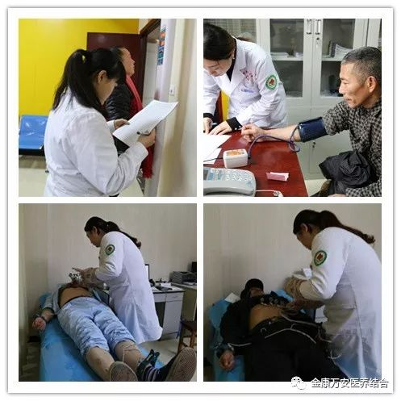
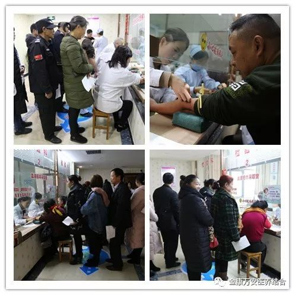
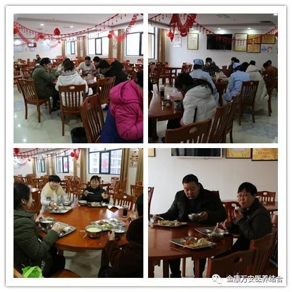
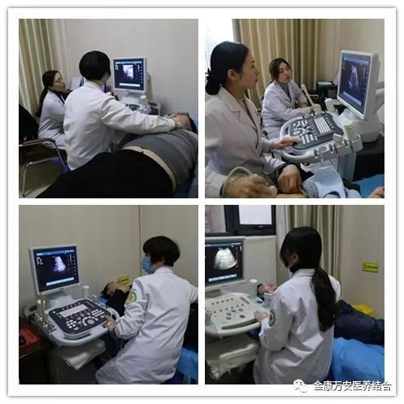
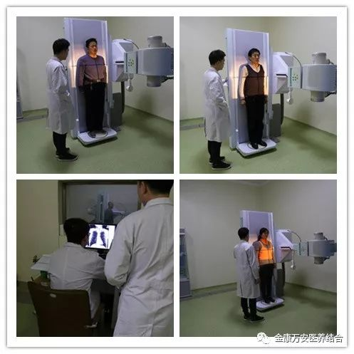

关爱员工健康--漯河万安医院为金康护理院、万安医院、万安老年公寓全体员工免费体检
人气: "" 时间：2018-12-13
关爱员工健康 2018员工体检圆满结束
为了切实关爱金康万安全体员工的身体健康，做到健康问题早检查、早发现，有病早治，无病早防。漯河金康护理院、万安医院、万安老年公寓两院全体员工为期10天的健康体检工作今天为止圆满结束。


为家人们测血糖、血压、心电图、血常规等检查
一直以来，院领导班子对两院全体员工的身体健康状况都给予了高度的重视。院领导、院工会一贯注重对员工工作以及生活的关心，为使此次体检工作更具人性化，确保体检工作有序开展，院工会及体检科精心筹划、全面准备，充分体现了我院“孝慈仁善”的文化理念。

院领导部署膳食科为家人们准备免费早餐
在体检过程中，工作人员全程引导，为每一位员工提供热情周到的服务，认真细致的做好每一个项目的检查。此次体检医护人员、养老护理员、行政后勤人员等共计300余人，体检主要对内科、外科、B超、心电图、胸片、血常规、肝肾功能、甲状腺功能、尿常规、肿瘤标志物及女职工的妇科、乳腺等项目进行细致的检查，从而让员工全面掌握自身的身体状况，确保广大员工的身体健康。


为家人们做彩超、胸片等检查
多年来，我院始终坚持“孝慈仁善”的企业文化，以人为本一心一意为员工办实事、办好事。员工身体健康是我院和谐发展的重要前提和保障，院领导一直高度关心员工的健康状况，始终把员工的利益与医院发展紧密结合起来，使员工切实感受到医院的关怀和温暖。